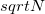
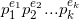
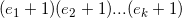

I've got hooked to Project Euler this week, after hearing good stuff about it for a long time. I've already solved the first 16 problems, and it has been lots of fun so far.
Most of the problems I've encountered are trivial, and can be either solved by a
simple brute-force approach or by using a known mathematical formula. Besides,
Python's built-in and efficient arbitrary-precision arithmetic makes many
problems very trivial (such as 16 - the sum
of digits in the number  ).
).
The first problem that gave me some hard time was 12 - I just couldn't brute-force it. Eventually, a couple of insights led me to the solution, which was very satisfying.
Below are some tips for solving it, though I don't provide the full solution.
The most important insight is that you don't have to enumerate all the numbers up to  and check if they divide it, counting those that do.
A faster method is to factorize N, and use the divisor function to compute the amount of divisors.
If the factorization of N is:

Where are the prime factors and are their exponents, then the total amount of divisors of N is:

Even with the crappy factorizing routine I used, this produces the amount of divisors for a given number much faster than the naive method.The second key insight (without which it would also take too long to solve this problem) is that since we're looking for the smallest number with 500 divisors, it will definitely have small prime factors. So I just threw away anything that didn't divide by 2, 3, 5 and so on. After a few experimentations, I had an algorithm that finds the desired number in about 4 seconds.